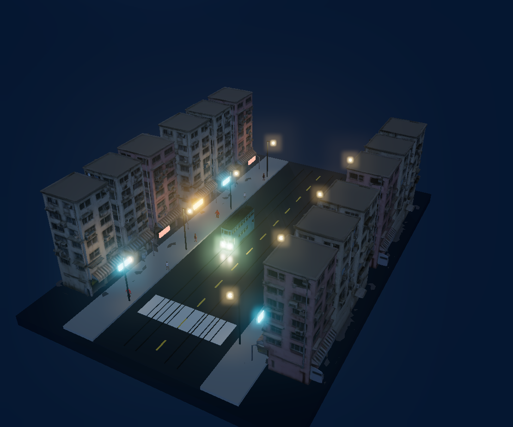
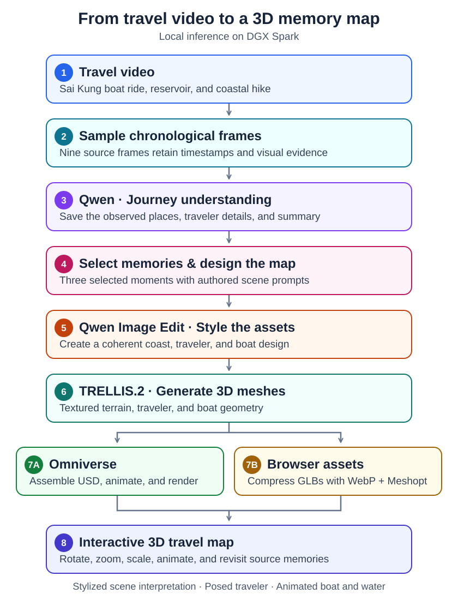

Choose your journey
Start with a ready-made journey, or use your own footage in the invited upload workspace. The two sample demos are open to everyone.
Coast & companions ↗
Three people, one boat, and a day by the sea.

City by tram ↗
Three video moments: office towers, apartment corners, and tram-side shops.
Create your own ↗
Upload video or photos. Review suggested moments and styles, then generate your 3D memory.
The embedded demo requires WebGL and an internet connection. Personal uploads open in a separate invitation-protected workspace.
From video to world
The two sample demos load precomputed assets. Personal uploads use an invitation-protected workspace: local models on DGX Spark propose moments and generate a scene after you approve your choices.
- Understand the journeyFor personal uploads, the trip-intent skill structures your highlights and the video-evidence skill proposes source frames. Review people, objects, and details before choosing your moments.
- Design the sceneSave your selected moments and appearance. An explicit Generate action uses Qwen-Image-Edit-2511 to create source-guided miniature designs.
- Generate and assembleTRELLIS.2-4B creates textured meshes for the private viewer. The two sample demos have authored scene layouts; the original coast also has an Omniverse assembly.
- Explore in the browserExplore your scene with camera and atmosphere controls, compare source frames, and download the generated mesh. Uploaded media stays in your private workspace.

A small world to revisit
Two public sample journeys, plus an invited workflow for your own video or photos. Personal results stay in the upload workspace.
What the demo represents
Interactive souvenirs inspired by selected video moments. The boat, tram, and water move; source frames remain visible beside each scene. A canopy cutaway makes passenger placement easy to inspect.
Current limits
The scenes are artistic recompositions, not surveyed geography. Faces and hidden surfaces are approximate. The sample people are posed; city pedestrians and alternate times of day are illustrative additions. Personal results are source-guided miniatures, not faithful reconstruction. Curated character replacements are available only in selected prototypes.